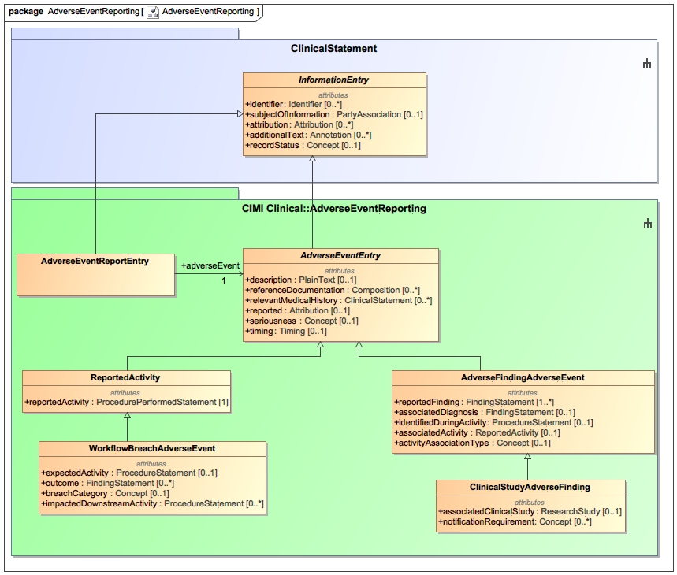

The AdverseEventReporting package contains the classes that support the reporting of adverse events. An adverse event may be an adverse finding such as an unexpected finding occurring during the course of a study even if causality has not been established to the study intervention, an adverse finding that is causally related to a procedure such as the administration of the wrong medication to a patient with resulting adverse consequences, simply a procedure that represents a breach of protocol even if no adverse finding resulted such as the administration of vitamin A to a patient that does not need the supplement and where no adverse consequence resulted. The AdverseEventEntry represents an entry in the patient record while the AdverseEventReportEntry represents an entry in an AdverseEventReport. Both the ReportedActivity and WorkflowBreachAdverseEvent support the reporting of activities that are either causally or simply temporally related to an adverse finding. If a workflow breach event has no adverse outcome, it represents a 'near miss'. The AdverseFindingAdverseEvent represents the documentation of an adverse finding whether or not accompanied by a reported activity. The ClinicalStudyAdverseEvent pertains to an adverse event occurring in the course of a research study.
Please note that the adverse event classes are in active development by the HL7 Patient Care Working Group at this time.
